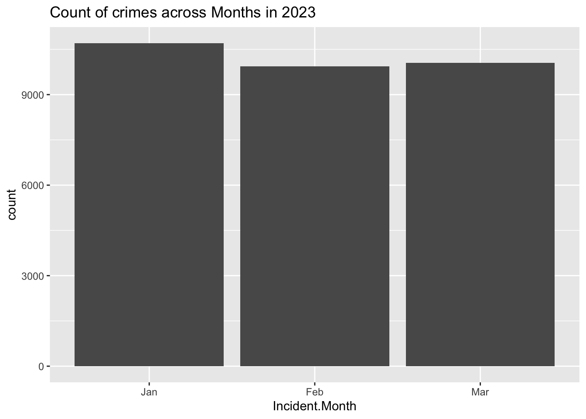

library(tidyverse)
library(lubridate)
knitr::opts_chunk$set(echo = TRUE, warning=FALSE, message=FALSE)Final Project Assignment#2: Prachiti Parkar
final_Project_assignment_1
final_project_data_description
San Francisco Crime Data Exploration
Overview of the Final Project
The goal is to tell a coherent and focused story with your data, which answers a question (or questions) that a researcher, or current or future employer, might want to have answered. The goal might be to understand a source of covariance, make a recommendation, or understand change over time. We don’t expect you to reach a definitive conclusion in this analysis. Still, you are expected to tell a data-driven story using evidence to support the claims you are making on the basis of the exploratory analysis conducted over the past term.
In this final project, statistical analyses are not required, but any students who wish to include these may do so. However, your primary analysis should center around visualization rather than inferential statistics. Many scientists only compute statistics after a careful process of exploratory data analysis and data visualization. Statistics are a way to gauge your certainty in your results - NOT A WAY TO DISCOVER MEANINGFUL DATA PATTERNS. Do not run a multiple regression with numerous predictors and report which predictors are significant!!
Tasks of Assignment#1
This assignment is the first component of your final project. Together with the later assignments, it make up a short paper/report. In this assignment, you should introduce a dataset(s) and how you plan to present this dataset(s). This assignment should include the following components:
A clear description of the dataset(s) that you are using.
What “story” do you want to present to the audience? In other words, what “question(s)” do you like to answer with this dataset(s)?
The Plan for Further Analysis and Visualization.
We will have a special class meeting on April 12 to review and discuss students’ proposed datasets for the final project. If you want your project being discussed in the class, please submit this assignment before April 12.
Part 1. Introduction
In this part, you should introduce the dataset(s) and your research questions.
- Dataset(s) Introduction:
The dataset is downloaded from DataSF, which has a number of open datasets provided by the San Francisco Government. Reference Link: https://datasf.org/opendata/
This dataset includes incident reports that have been filed as of January 1, 2018. These reports are filed by officers or self-reported by members of the public using SFPD’s online reporting system. The reports are categorized into the following groups based on how the report was received and the type of incident:
Initial Reports: the first report filed for an incident Coplogic Reports: incident reports filed by members of the public using SFPD’s online reporting system Vehicle Reports: any incident reports related to stolen and/or recovered vehicles
Data is added to open data once incident reports have been reviewed and approved by a supervising Sergeant or Lieutenant. Incident reports may be removed from the dataset if in compliance with court orders to seal records or for administrative purposes such as active internal affair investigations and/or criminal investigations.
- What questions do you like to answer with this dataset(s)?
We can make observations about 1. the district wise distribution of crime, 2. what is the most frequent resolution in different districts, 3. what are the top crimes and what time does it occur, 4. what are the crime hotspots, 5. frequency of count of crimes across months.
Part 2. Describe the data set(s)
This part contains both a coding and a storytelling component.
In the coding component, you should:
read the dataset;
(optional) If you have multiple dataset(s) you want to work with, you should combine these datasets at this step.
(optional) If your dataset is too big (for example, it contains too many variables/columns that may not be useful for your analysis), you may want to subset the data just to include the necessary variables/columns.
Since the data is huge containing 713107 columns and 35 columns, I decided to minimize my dataset to only the year 2023 which has around 30K rows.
data <- read.csv("PrachitiParkar_FinalProjectData/Police_Department_Incident_Reports__2018_to_Present.csv")
data = filter(data, Incident.Year == 2023)present the descriptive information of the dataset(s) using the functions in Challenges 1, 2, and 3;
- for examples: dim(), length(unique()), head();
dim(data)[1] 30687 35length(unique(data))[1] 35head(data)conduct summary statistics of the dataset(s); especially show the basic statistics (min, max, mean, median, etc.) for the variables you are interested in.
summary(data) Incident.Datetime Incident.Date Incident.Time Incident.Year
Length:30687 Length:30687 Length:30687 Min. :2023
Class :character Class :character Class :character 1st Qu.:2023
Mode :character Mode :character Mode :character Median :2023
Mean :2023
3rd Qu.:2023
Max. :2023
Incident.Day.of.Week Report.Datetime Row.ID Incident.ID
Length:30687 Length:30687 Min. :1.230e+11 Min. :1229913
Class :character Class :character 1st Qu.:1.238e+11 1st Qu.:1238439
Mode :character Mode :character Median :1.246e+11 Median :1245767
Mean :1.246e+11 Mean :1245693
3rd Qu.:1.253e+11 3rd Qu.:1252958
Max. :1.261e+11 Max. :1261142
Incident.Number CAD.Number Report.Type.Code
Min. : 0 Min. :172441963 Length:30687
1st Qu.:230065057 1st Qu.:230250554 Class :character
Median :230133182 Median :230470081 Mode :character
Mean :230836666 Mean :230585208
3rd Qu.:230201488 3rd Qu.:230682186
Max. :239000443 Max. :999999999
NA's :6454
Report.Type.Description Filed.Online Incident.Code Incident.Category
Length:30687 Mode:logical Min. : 1000 Length:30687
Class :character TRUE:5475 1st Qu.: 6244 Class :character
Mode :character NA's:25212 Median : 7041 Mode :character
Mean :24104
3rd Qu.:28160
Max. :75030
Incident.Subcategory Incident.Description Resolution
Length:30687 Length:30687 Length:30687
Class :character Class :character Class :character
Mode :character Mode :character Mode :character
Intersection CNN Police.District Analysis.Neighborhood
Length:30687 Min. :20013000 Length:30687 Length:30687
Class :character 1st Qu.:23917000 Class :character Class :character
Mode :character Median :24924000 Mode :character Mode :character
Mean :25209532
3rd Qu.:26412000
Max. :51541000
NA's :1600
Supervisor.District Supervisor.District.2012 Latitude Longitude
Min. : 1.000 Min. : 1.000 Min. :37.71 Min. :-122.5
1st Qu.: 3.000 1st Qu.: 3.000 1st Qu.:37.75 1st Qu.:-122.4
Median : 6.000 Median : 6.000 Median :37.78 Median :-122.4
Mean : 5.993 Mean : 6.048 Mean :37.77 Mean :-122.4
3rd Qu.: 9.000 3rd Qu.: 9.000 3rd Qu.:37.79 3rd Qu.:-122.4
Max. :11.000 Max. :11.000 Max. :37.83 Max. :-122.4
NA's :1616 NA's :1605 NA's :1600 NA's :1600
Point Neighborhoods ESNCAG...Boundary.File
Length:30687 Min. : 1.00 Min. :1
Class :character 1st Qu.: 22.00 1st Qu.:1
Mode :character Median : 50.00 Median :1
Mean : 53.62 Mean :1
3rd Qu.: 86.00 3rd Qu.:1
Max. :117.00 Max. :1
NA's :2081 NA's :30410
Central.Market.Tenderloin.Boundary.Polygon...Updated
Min. :1
1st Qu.:1
Median :1
Mean :1
3rd Qu.:1
Max. :1
NA's :26308
Civic.Center.Harm.Reduction.Project.Boundary HSOC.Zones.as.of.2018.06.05
Min. :1 Min. :1.000
1st Qu.:1 1st Qu.:1.000
Median :1 Median :3.000
Mean :1 Mean :2.259
3rd Qu.:1 3rd Qu.:3.000
Max. :1 Max. :5.000
NA's :26584 NA's :24573
Invest.In.Neighborhoods..IIN..Areas Current.Supervisor.Districts
Mode:logical Min. : 1.000
NA's:30687 1st Qu.: 3.000
Median : 8.000
Mean : 6.759
3rd Qu.:10.000
Max. :11.000
NA's :1605
Current.Police.Districts
Min. : 1.00
1st Qu.: 3.00
Median : 5.00
Mean : 4.94
3rd Qu.: 7.00
Max. :10.00
NA's :1621 Storytelling:
The description of each column is -
Incident Datetime - The date and time when the incident occurred
Incident Date - The date the incident occurred
Incident Time- The time the incident occurred
Incident Year - The year the incident occurred, provided as a convenience for filtering
Incident Day of Week - The day of week the incident occurred
Report Datetime - Distinct from Incident Datetime, Report Datetime is when the report was filed.
Row ID - A unique identifier for each row of data in the dataset
Incident ID - This is the system generated identifier for incident reports. Incident IDs and Incident Numbers both uniquely identify reports, but Incident Numbers are used when referencing cases and report documents.
Incident Number - The number issued on the report, sometimes interchangeably referred to as the Case Number. This number is used to reference cases and report documents.
CAD Number - The Computer Aided Dispatch (CAD) is the system used by the Department of Emergency Management (DEM) to dispatch officers and other public safety personnel. CAD Numbers are assigned by the DEM system and linked to relevant incident reports (Incident Number).
Report Type Code - A system code for report types, these have corresponding descriptions within the dataset.
Report Type Description - The description of the report type, can be one of: Initial; Initial Supplement; Vehicle Initial; Vehicle Supplement; Coplogic Initial; Coplogic Supplement
Filed Online - Non- emergency police reports can be filed online by members of the public using SFPD’s self-service reporting system called Coplogic Values in this field will be “TRUE” if Coplogic was used to file the report.
Incident Code - Incident Codes are the system codes to describe a type of incident. A single incident report can have one or more incident types associated. In those cases you will see multiple rows representing a unique combination of the Incident ID and Incident Code.
Incident Category - A category mapped on to the Incident Code used in statistics and reporting. Mappings provided by the Crime Analysis Unit of the Police Department.
Incident Subcategory - A subcategory mapped to the Incident Code that is used for statistics and reporting. Mappings are provided by the Crime Analysis Unit of the Police Department.
Incident Description - The description of the incident that corresponds with the Incident Code. These are generally self-explanatory.
Resolution - The resolution of the incident at the time of the report. Can be one of: • Cite or Arrest Adult • Cite or Arrest Juvenile* • Exceptional Adult • Exceptional Juvenile* • Open or Active • Unfounded Juvenile information not maintained in the dataset.
Intersection - The 2 or more street names that intersect closest to the original incident separated by a backward slash.
CNN - The unique identifier of the intersection for reference back to other related basemap datasets.
Police District - The Police District where the incident occurred. District boundaries can be reviewed in the link below.
Analysis Neighborhood - This field is used to identify the neighborhood where each incident occurs. Neighborhoods and boundaries are defined by the Department of Public Health and the Mayor’s Office of Housing and Community Development.
Supervisor District - There are 11 members elected to the Board of Supervisors in San Francisco, each representing a geographic district. The Board of Supervisors is the legislative body for San Francisco. The districts are numbered 1 through 11.
Latitude - The latitude coordinate in WGS84, spatial reference is EPSG:4326
Longitude - The longitude coordinate in WGS84, spatial reference is EPSG:4326
Point - Geolocation in OGC WKT format (e.g, POINT(37.4,-122.3)
3. The Tentative Plan for Visualization
- Briefly describe what data analyses (please the special note on statistics in the next section) and visualizations you plan to conduct to answer the research questions you proposed above.
I plan to plot some line graphs and bar graphs to answer the research questions.
The district wise distribution of crime - I plan to plot a bar graph to show safe and unsafe districts - the tallest bar would be the one has the highest amount of crimes (unsafe) and the shortest would be the one which has the least amount of crimes. (safe)
What is the most frequent resolution in different districts - I plan to plot compound bar graph to show various resolutions in each district, this would be a further deep down than the first plot. The larger proportion of the bar would point to highest number of crimes with that resolution.
What are the top crimes and what time does it occur - I plan to plot bar graphs and heat maps for this question.
What are the crime hotspots - I plan to use the map of San Francisco from get_statemap() library and then accordingly plot the crimes at the respective longitude and latitude.
Frequency of count of crimes across months- I plan to plot line graph/ bar graph (depending on better visual appearance) showing the crimes across months.
- Explain why you choose to conduct these specific data analyses and visualizations. In other words, how do such types of statistics or graphs (see the R Gallery) help you answer specific questions? For example, how can a bivariate visualization reveal the relationship between two variables, or how does a linear graph of variables over time present the pattern of development?
The district wise distribution of crime - This will help us figure out the most unsafe and safe districts.
What is the most frequent resolution in different districts - This would help us understand most and least adopted resolutions to deal with crimes.
What are the top crimes and what time does it occur - This will help us identify the most unsafe times - day or night and this can help the police increase & tighten security during that time to prevent crimes.
What are the crime hotspots - The San Francisco state map with the crimes plot will help us locate most unsafe cities in the state and can help the police department to tighten security there.
Frequency of count of crimes across months - Plotting a line/bar graph will help us understand the most unsafe months and we can according correlate it with inflation/recession and develop insights.
If you plan to conduct specific data analyses and visualizations, describe how do you need to process and prepare the tidy data.
What do you need to do to mutate the datasets (convert date data, create a new variable, pivot the data format, etc.)?
How are you going to deal with the missing data/NAs and outliers? And why do you choose this way to deal with NAs?
I plan to first remove columns which has mostly NA values since that would not lead to any concrete insights. I have already filtered the data to focus on the year 2023 since the data is huge and processing so many rows will take some time. I also plan to mutate and add additional columns like months from the date column during the preprocessing step so that it will make it easier to plot graphs.
data <- data %>%
separate('Incident.Time',c('Incident.Hour','Incident.Minute'),sep = ":")
data$Incident.Date <- as.Date(data$Incident.Date, format = "%m/%d/%y")
data <- data %>%
mutate(Incident.Month = month(Incident.Date, label = T))- (Optional) It is encouraged, but optional, to include a coding component of tidy data in this part.
4. Analyses and Visualizations
#Q1: District wise distribution of crime
crime_per_district <- data %>%
group_by(Police.District) %>%
summarise(n = n())
colnames(crime_per_district) <- c("Police.District", "Total")
head(crime_per_district )g <- ggplot(crime_per_district, aes(Police.District, Total))
g + geom_bar(stat="identity", width = 0.5, fill="pink") +
labs(title="District-wise distribution of crime in San Francisco",
subtitle="2023",
caption=" Total crime in each district") +
theme(axis.text.x = element_text(angle=65, vjust=0.6))#Q2: Most frequent resolution in different districts
g <- ggplot(data, aes(Police.District))
g + geom_bar(aes(fill=Resolution), width = 0.5) +
theme(axis.text.x = element_text(angle=65, vjust=0.6)) +
labs(title="Resolution in each District",
)#Q3: Analysis of Top Crimes and Their Occurrence Time
#a) Hourly Crime Distribution
We can create a dataframe by grouping by Incident Hour.
crime_perhours <- data %>%
group_by(Incident.Hour) %>%
summarise(TotalCrime = n())
head(crime_perhours)ggplot(crime_perhours, aes(x = Incident.Hour, y = TotalCrime))+
geom_col(fill = "orange")+
theme_minimal()+
labs(
title = "Crime per hour, San Francisco 2018 - 2022",
x = "Hours",
y = "Total Crime"
)We can observe that maximum crimes occur around 12 in the afternoon, then another spike at midnight. It then gradually decreases from 1 am - 7 am in the morning.
#b) Theft time Heatmap
Of the above hourly districution, let us focus on Larcent Theft and plot the heatmap.
df_theft_time <- data %>%
filter(Incident.Category=="Larceny Theft")%>%
group_by(Incident.Day.of.Week, Incident.Hour) %>%
summarize(count = n())
head(df_theft_time)plot <- ggplot(df_theft_time, aes(x = Incident.Hour, y = Incident.Day.of.Week, fill = count)) +
geom_tile() +
theme(axis.text.x = element_text(angle = 90, vjust = 0.6), legend.title = element_blank(), legend.position="top", legend.direction="horizontal", legend.key.width=unit(2, "cm"), legend.key.height=unit(0.25, "cm"), legend.margin=unit(-0.5,"cm"), panel.margin=element_blank()) +
labs(x = "Hour of Theft (Local Time)", y = "Day of Week of Theft", title = "Number of Thefts in San Francisco from 2018 – 2022, by Time of Theft") +
scale_fill_gradient(low = "white", high = "orange")
plot#Q4: Crime hotspots
#a) Map of San Francisco
library(ggmap)
sf = get_stamenmap(bbox = c(left = -122.5164, bottom = 37.7066, right = -122.3554, top = 37.8103),
maptype = c("toner-lite"), zoom = 13)
map = ggmap(sf)
map
#b) Plotting the first 500 random points on the map
map + geom_point(data = sample_n(data, 500), aes(x = Longitude, y = Latitude))We can already observe a clustering towards the city center.
#c) Density Plot
map +
stat_density2d( data = sample_frac(data, 0.2), aes(x = Longitude, y = Latitude, fill = ..level.., alpha = ..level..), size = 1, bins = 50, geom = 'polygon') +
scale_fill_gradient('Crime\nDensity', low = 'blue', high = 'orange') +
scale_alpha(range = c(.2, .3), guide = FALSE) +
guides(fill = guide_colorbar(barwidth = 1.5, barheight = 10))#Q5: Count of crimes across months
data %>%
ggplot(aes(Incident.Month)) + geom_bar()+
labs(title = "Count of crimes across Months in 2023")